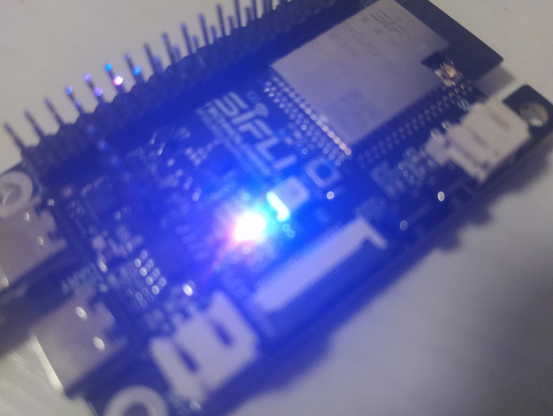

SiFli思澈芯片的启动流程和rust点灯
本文最后更新于 2025年6月30日 下午
SiFli思澈芯片的启动流程和rust点灯
最近也是收到了思澈送的sf32lb52开发板，低功耗蓝牙，大内存大Flash，STAR-MC1(Cortex-M33)还是很有吸引力的，可以好好玩一番。
这篇文章就来分析一下思澈芯片的二级Bootloader、FlashTable，顺便写一个Rust点灯程序。
repo：https://github.com/OpenSiFli/sifli-rs
SiFli芯片简介
不是广告不是广告不是广告
SF32LB52x 芯片采用了基于Arm Cortex-M33 STAR-MC1 处理器的大小核架构，集成高性能2D/2.5D图形引擎，双模蓝牙5.3，以及音频codec。
芯片中大核性能处理器最高工作频率达192MHz，单 核性能达787CoreMark，支持动态频率功耗调节，功 耗效率最高可达4.8uA/CoreMark。
思澈的芯片已经在小米、华为、华强北手表上广泛使用。最近（25年初）他们拥抱开源社区，开源了SDK，发售了开发板（以后会和嘉立创合作出一个板子）。
做开源社区的，还是熟悉的国梁，之前在喝粥，现在跳到思澈了（吐槽：圈子真小，一个群都是熟悉的面孔）
启动流程
参考：
- SiFli-SDK boot_loader
- SiFli-SDK flash table中，flash bootloader的地址问题和宏覆盖问题 · Issue #10
- SiFli Docs 应用程序启动流程 - SiFli SDK编程指南 文档
- SiFli Docs 安全引导加载 - SiFli SDK编程指南 文档
Overview
SiFli SF32LB52x有两级Bootloader。
一级Bootloader固化在了芯片的ROM中，初始化Flash和调试串口，运行二级Bootloader。
二级Bootloader一般在启动Flash的开始位置+0x10000，比如0x1201 0000。它初始化PSRAM，并跳转用户程序并运行。
用户程序在启动Flash的开始位置+0x20000， 比如0x1202 0000.
Flash Table、二级Bootloader和用户程序一起编译和烧录。
地址空间

内置SRAM
HPSYS 总线上共有512KB SRAM，其中包括：
- 0x2000_0000-0x2001_FFFF，128KBzero-wait-cycle SRAM（与D-TCM共享），所有AHBmaster均可访问， 最高频率为192MHz。
- 0x2002_0000-0x2007_FFFF，384KBzero-wait-cycle SRAM，所有AHBmaster均可访问，最高频率为192MHz
外挂Flash或PSRAM
SiFli SF32LB52x使用MPI1和MPI2来挂载Flash或PSRAM。既可以合封，也能挂载到外部。
HPSYS支持合封四线和八线PSRAM，外挂NOR/NANDFLASH。
MPI1可挂PSRAM，地址0x6000_0000–0x61FF_FFFF，接口最高频率为DDR 144MHz，数据位宽为8-bit。
MPI1 可挂合封FLASH，地址0x6000_0000 - 0x61FF_FFFF (0x1000_0000 - 0x11FF_FFFF) 推荐使用频率为96MHz
MPI2 可挂外置FLASH，地址0x6200_0000 - 0x9FFF_FFFF (0x1200_0000 - 0x1FFF_FFFF) 推荐使用频率为60MHz
SF32LB52-MOD-1-N16R8
以我手头的SF32LB52-DevKit-LCD V1.2（板载SF32LB52-MOD-1-N16R8）为例：
MPI1挂了 8MB OPI-PSRAM，地址0x6000_0000，MPI2挂了16MB QSPI-NOR Flash，实际地址0x1200_0000。
FlashTable
FlashTable一般在Flash的其实地址（内部或者外部Flash，下文称为启动Flash），比如 (0x1200_0000 - 0x12001_FFFF，地址空间64K) ，用来指示二级Bootloader，HCPU，LCPU的代码位置和运行方式。
目前默认FlashTable的生成方式是：
- Scons构建脚本根据 ptab.json 分区表的
ftab条目生成ftab.c - Scons构建脚本根据 ptab.json 分区表的
tags条目生成ptab.h，这是一个undef的文件，覆盖定义mem_map.h 中的宏。（其中有一些宏依赖关系，所以不仅仅是ptab.h里的宏改变了。 - 然后编译ftab.c，不链接其它代码，直接编译为ftab.bin。
个人认为这个覆盖宏的流程，以及宏命名方式有点糟糕（小声）
我在过年的时候也尝试复刻了这个流程，来给Rust固件来用：sifli-flash-table。之后我想把烧录用的那一堆文件整理下，做个runner或者cli出来，但还没想好怎么做。
这是我写flash table时和工程师交流的issue，可供参考：Issue #10 · OpenSiFli/SiFli-SDK
一级Bootloader
一级Bootloader固化在了芯片的ROM中，其中断向量表地址为0。上电后会首先运行一级Bootloader，根据芯片封装类型，确定Flash分区表的位置，根据Flash分区表指示的二级Bootloader地址（必须在启动Flash上，地址为启动Flash开始的地址），拷贝二级Bootloader代码到RAM中，并跳转运行。
一级Bootloader会初始化SiFli那个既当Uart又当SWD的串口，发送SFBL信息，检查是否设置了BOOT选项，以进入下载模式（这样我们就不怕自己的程序把芯片玩成砖了）
一级Bootloader阶段大核以上电默认的时钟频率运行，初始化启动Flash的IO配置。
源码:SiFli-SDK/example/boot_loader， BOOTROM宏开启。
跳转方式为：
1 | |
它将SP(Stack Pointer)栈指针，也就是栈的最高地址，设为目的固件的第一个地址(stack_top)。
将PC（Program Counter）程序计数器，也就是下一条命令的地址，设为目的固件的第二个地址（ResetHandler）。这符合标准的cortex-m向量表格式。
二级Bootloader
二级Bootloader同样是有向量表和启动汇编的完整cortex-m程序。在SystemInit中会重定义向量表（设置SCB->VTOR寄存器）。
二级Bootloader根据芯片封装类型以及Flash分区表，加载应用程序并跳转执行。根据芯片封装类型，应用程序分为以下几种启动方式：
XIP（直接以NOR Flash地址执行代码，代码的存储地址与执行地址相同）
使用MPI内置或外挂NOR FLASH
非XIP（从Flash拷贝代码到RAM中执行，即代码的存储地址与执行地址不同）
内置PSRAM（MPI1），外置MP1 NAND FLASH或SDIO SD FLASH。
不论是哪种启动方式，应用程序与二级Bootloader均存放在同一个启动Flash上。
二级Bootloader会调整时钟设置，详见文档。
源码:SiFli-SDK/example/boot_loader， BOOTROM宏关闭。
二级Bootloader的跳转函数和上述一级Bootloader相同。
用户固件
SiFli的用户固件同样还是有向量表和启动汇编的完整cortex-m程序。
事实上，两个Bootloader和用户固件用的是同一个startup.s和linker script。
根据文档，二级Bootloader不加载PMU的校准参数，仅修改所使用的存储相关的IO设置。Cache未使能，MPU未使能。在用户固件中还需要将这三个东西初始化。
Rust点灯
对于Cortex-M33 STAR-MC1(thumbv8m.main)有成熟的LLVM后端和Rust前端，那当然要上Rust呀。
Rust，启动！
对于Rust HAL的结构，这里不再赘述，请参考：
Rust 嵌入式开发中的外设寄存器访问：从 svd2rust 到 chiptool 和 metapac - 以 hpm-data 为例 | 猫·仁波切
embassy-rs/embassy: Modern embedded framework, using Rust and async.
我之后也会基于py32或sifli写一篇博客。
sifli-hal基本是复制了embassy/embassy-rp的项目结构，我自己加了一些codegen，比如中断表和外设singleton（单例）生成。
GPIO驱动
GPIO的代码并不复杂：sifli-rs/sifli-hal/src/gpio.rs
思澈也对每一个用bit（一个IO用一个bit那种）的寄存器提供了三个入口，比如：
DOER：数据输出开启寄存器（Data Output Set Register），RW，1打开，0关闭。
DOESR： 数据输出开启置位寄存器（Data Output Enable Set Register），Write Only，对某位写1来开启。
DOECR： 数据输出开启清除寄存器（Data Output Enable Clear Register）Write Only，对某位写1来关闭。
这就省去我们按位与、取反等等的麻烦。
要注意的是，不能复位PINMUX外设，因为有些引脚已经用作MPI引脚，复位它就崩了。
寄典之调试
但是我却被卡了两天，运行Rust固件就HardFault。而且使用cortex-debug产生HardFault就直接断了，SiFliUartServer的灯也灭了（查看文档是说Debug模式关闭，此时也无法烧录固件，无法再次连接调试，除非复位）
在初次尝试JLink Commander的情况也同上。
在SDK中将SWD引脚PINMUX设为SWD功能，使用DAPlink也无法连接。
在N次尝试后，我发现还是有概率读到SCB寄存器的值的。显示UsageFault INVSTATE。

cortex-debug并不提供SCB寄存器信息，sifli svd也没有，我只能从stm32那里借了一个svd过来。
UsageFault INVSTATE

In the Cortex-M33 processor, any values of ICI bits that were not legally written, because of an interruption to an exception-continuable instruction, generate an INVSTATE UsageFault exception on attempt to re-execute the interrupted instruction.
简单来说，PC寄存器的值必须是奇数，也就是最后一个bit（LSB）需要是1。LSB置1表示Thumb指令集，0表示ARM指令集。由于cortex-m不支持ARM指令集，所以就会报错了。正常的代码是不用管这个的，但是中断表中的向量必须都是奇数。
我之前有一些尝试，手动将固件的ResetHandler设为main函数地址或空函数地址（通过objdump得到），验证是否是启动代码导致的问题，不过都失败了，原因之一就是我没有处理LSB位。
之后，我又尝试了JLink Commander，发现这玩意其实挺稳的，一般不容易导致断开。也是这玩意带我找出了问题所在。
寄典之MSPLIM
我使用Jlink Commander设置断点在bootloader跳转的位置和启动汇编中，然后对照使用objdump反编译出来的asm来逐步调试，发现其实运行完了ccortex-m-rt中的汇编。然而，当跳转进main函数，压栈时，HardFault发生了：
1 | |
还是LSB的问题。于是我又一顿研究……一无所获。
……
之后，在我对照启动文件的时候，以外发现了一行：
1 | |
SiFli-SDK/drivers/cmsis/sf32lb52x/Templates/gcc/startup_bf0_hcpu.S
死马当活马医，加上，果然跑起来了！

MSPLIM
MSPLIM: The stack limit registers limit the extent to which the MSP and PSP registers can descend respectively.
这个东西是好东西，Armv8-M（Cortex-M33，M23）才有的，用于设置栈底，当堆栈溢出时会产生HardFault（UsageFault STKOF），防止踩到.bss和.data段。有了这个东西，flip-link 都不用了。
也就是说，Bootloader已经设置了MSPLIM，而我没去重新设置它，导致的问题。
不过，为什么产生的是INVSTATE而不是STKOF，就不得而知了……
我给sifli-hal加上这些代码，用掉cortex-m-rt的__pre_init符号，来设置msplim就OK了：
1 | |
同时，我也给cortex-m-rt拉了PR，但是他们会不会合，就说不定了：
最后
找到这个问题用了不短的时间，这还让我几乎学会了命令行gdb和arm汇编（盯着汇编看了好久），emmmm
不过总之也是跑通了，Cortex-M33就是好玩，那个太监Cortex-M0连中断原因都查不了。
对于sifli-rs，可能会有更多的大佬参与进来（目前SiFli的SDK和工具链还不支持Linux/Mac）。我自己的时间和精力来写完一整个hal估计是不太够（Welcome！）
我自己这边，打算之后像我之前搞的 py32-bind-hal 和 py32csdk-hal-sys 一样搞一套binding出来，毕竟sifli的外设大多没得抄，py32-hal直接copy stm32就行了。而且蓝牙等一些东西不得不用binding。
对于GPIO、Usart这些外设可能会优先写驱动，USB是个musb，能直接用我之前写的musb crate，而对于I2C、SPI这种无聊的通讯外设，那可能就优先使用Bindings来顶着。
然后，我个人很想玩玩SiFli这个2.5D GPU ePicasso，据说是自研的。SiFli给了这么大的资源，肯定要移植到Slint上玩玩。